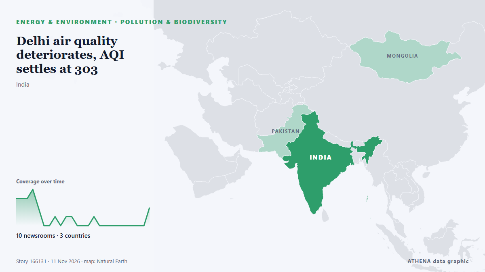

Delhi air quality deteriorates, AQI settles at 303

New Delhi: Delhi's air quality worsened to 'very poor' on Wednesday, with the AQI settling at 303, the Central Pollution Control Board (CPCB) data showed. από Deccan Herald
Αναφέρθηκε ανεξάρτητα από 10 μέσα σε 3 χώρες από τις 9 Νοε, πρώτο το The Hindu· η κάλυψη κορυφώνεται. Το ATHENA εκτιμά τον κίνδυνο μέτριο (3.3/10), κυρίως λόγω της σοβαρότητάς του και της τεκμηρίωσης. Βεβαιότητα 83% (υψηλή): το επιβεβαιώνουν 10 ανεξάρτητα μέσα, μέση αξιοπιστία 69%. Μέσα ανά χώρα: Ινδία (19), Πακιστάν (1), Καναδάς (1). Κάλυψη: 9 Νοε έως 11 Νοε, 49 ώρες.
Γιατί έχει σημασία: Οι εξελίξεις στην ενέργεια και τους πόρους επηρεάζουν τις τιμές καυσίμων και ρεύματος, την ασφάλεια εφοδιασμού και τους κλιματικούς στόχους.
Τι άλλαξε: 3 νέες αναφορές από 3 μέσα στο 24ωρο έως 11 Νοε.
Πρώτη διατύπωση: Delhi air pollution: AAP slams Delhi govt for alleged air quality data ‘manipulation’
Οι τίτλοι των ειδήσεων παρουσιάζονται στα αγγλικά, όπως δημοσιεύτηκαν.
Πώς να διαβάσετε αυτή τη σελίδα
- Τι διαβάζετε
- 10 μέσα σε 3 χώρες ανέφεραν αυτό το γεγονός. Οι αναφορές παρακάτω εμφανίζονται με τη σειρά που δημοσιεύτηκαν· κάθε τίτλος ανοίγει το αρχικό άρθρο. Το ATHENA δεν γράφει δικά του ρεπορτάζ.
- Η εκτίμησή μας
- Για την καταγραφή — Οι αναφορές περιγράφουν ένα ολοκληρωμένο, εσωτερικό, εμπορικό ή προσωπικό ζήτημα. Το καταγράφουμε ώστε να βλέπετε ποιος το ανέφερε και πότε. Δεν παρακολουθούμε εδώ κίνδυνο ευρύτερης σύγκρουσης.
- Πόσα στοιχεία υπάρχουν
- Περιορισμένη Αντιμετωπίστε τη σελίδα ως πρώιμη αναφορά.
Αφού αφαιρεθούν οι επαναλήψεις, τα άσχετα και τα παλιά στοιχεία, υπολογίζονται 9 από τις 21 αναφορές που παρατίθενται· το 90% των τίτλων αντιστοιχεί στο γεγονός.
- Τι δεν σημαίνει
- Το ATHENA μετρά πώς καλύπτεται ένα γεγονός, όχι αν είναι αληθές. Δεν είναι πρόβλεψη, κρίση για το ποιος έχει δίκιο ή συμβουλή.
- Τι θα την άλλαζε
- Αναφορές από άλλα ανεξάρτητα μέσα που δείχνουν διαφορετική εξέλιξη, ή σαφής επιβεβαίωση ή διάψευση από επίσημη πηγή.
Εκτίμηση R2 · ανανεώνεται με κάθε ενημέρωση της σελίδας. Το ATHENA δεν έχει δημοσιεύσει ακόμη ιστορικό επιδόσεων για αυτές τις εκτιμήσεις· όταν το κάνει, θα συνδέεται εδώ.
Με μια ματιά
Επιλέγεται, βαθμολογείται και γράφεται από τη δημοσιευμένη μεθοδολογία του ATHENA. Κανένας συντάκτης δεν παρεμβαίνει σε μεμονωμένα γεγονότα. Πώς παράγεται ›
| 09 Nov 05:01 UTC | 3 |
|---|---|
| 09 Nov 07:01 UTC | 3 |
| 09 Nov 09:01 UTC | 3 |
| 09 Nov 11:01 UTC | 4 |
| 09 Nov 13:01 UTC | 2 |
| 09 Nov 15:01 UTC | 0 |
| 09 Nov 17:01 UTC | 0 |
| 09 Nov 19:01 UTC | 1 |
| 09 Nov 21:01 UTC | 0 |
| 09 Nov 23:01 UTC | 1 |
| 10 Nov 01:01 UTC | 1 |
| 10 Nov 03:01 UTC | 0 |
| 10 Nov 05:01 UTC | 0 |
| 10 Nov 07:01 UTC | 0 |
| 10 Nov 09:01 UTC | 1 |
| 10 Nov 11:01 UTC | 0 |
| 10 Nov 13:01 UTC | 0 |
| 10 Nov 15:01 UTC | 0 |
| 10 Nov 17:01 UTC | 0 |
| 10 Nov 19:01 UTC | 0 |
| 10 Nov 21:01 UTC | 0 |
| 10 Nov 23:01 UTC | 0 |
| 11 Nov 01:01 UTC | 0 |
| 11 Nov 03:01 UTC | 0 |
| 11 Nov 05:01 UTC | 2 |
| 09 Nov 05:22 UTC | 2.7 |
|---|---|
| 09 Nov 06:32 UTC | 1.8 |
| 09 Nov 07:44 UTC | 2.3 |
| 09 Nov 12:49 UTC | 3.1 |
| 11 Nov 06:29 UTC | 3.3 |
Γιατί αυτοί οι αριθμοί
Σημασία
Κίνδυνος
Βεβαιότητα
Η κάλυψη — ποιος το ανέφερε και πότε
ο τίτλος όπως δημοσιεύτηκε · ανοίγει το πρωτότυπο- The Hindu · ΙνδίαDelhi AQI row: AAP alleges data fraud, BJP fires back over Punjab stubble ‘conspiracy’
- Indian Express · ΙνδίαDelhi’s AQI is 370, but some platforms show 1,000: Why do readings differ?
- Livemint · ΙνδίαWhat was Delhi air quality on Deepavali night?Even reading yesterday’s Diwali AQI will discomfort your lungs; check data
- Dawn · ΠακιστάνLahore remains world’s most polluted major city as AQI crosses 600
- Hindustan Times · Ινδία‘Delhi AQI crossed 3,000’: AAP's Saurabh Bharadwaj alleges ‘AQI data fraud’ by government
- Indian Express · ΙνδίαAs Delhi’s air turned toxic on Diwali, 45 monitoring stations had missing readings
- Indian Express · ΙνδίαDelhi pollution: What breathing toxic air for just 7 days can do to your lungs and heart
- Indian Express · ΙνδίαAQI above 400: How toxic air can affect your lungs, heart and brain
- The Hindu · ΙνδίαDelhi AQI: What is PM2.5 and the row over air pollution data post Deepavali?
- CBC News · ΚαναδάςNew Delhi wakes to toxic smog as Diwali firecrackers add to seasonal pollution crisis
- The Hindu · ΙνδίαChennai’s air quality deteriorates to ‘poor’ the morning after Deepavali
- Deccan Herald · ΙνδίαQuestions over Delhi AQI data as several monitoring stations go offline on Diwali night
- The Hindu · ΙνδίαAt peak of air pollution on Deepavali, data goes missing at several government monitoring stations in Delhi
- Deccan Herald · ΙνδίαDelhi Diwali aftermath: What 'severe' AQI means for your health?
- Scroll.in · ΙνδίαDelhi air pollution: Several monitoring stations did not report AQI readings on Diwali night
- Times of India · ΙνδίαDelhi pollution on Diwali rockets to worst in 5 years
- Hindustan Times · ΙνδίαDelhi pollution monitors went dark as AQI surged on Diwali
- NDTV · ΙνδίαChennai Air Quality Turns 'Very Poor' As AQI Crosses 300 On Diwali
- Times of India · Ινδία373 or 1,747? What was Delhi's actual AQI on Diwali and why did readings differ
- Deccan Herald · ΙνδίαDelhi air quality deteriorates, AQI settles at 303
- The Hindu · ΙνδίαDelhi air quality deteriorates, AQI settles at 303